专题1.1 生活中的立体图形
专题1.1 生活中的立体图形


教学目标 | 1.认识圆柱、圆锥、正方体、棱柱、球. 2.会用数学的语言描述圆柱、圆锥、正方体、棱柱、球的某些特征并能对它们进行简单的分类. 3.进一步认识点、线、面、体，感受点、线、面、体之间的关系. 4.经历从现实世界中抽象出图形的过程，会从构成图形的基本元素的角度认识常见几何体的特征. |
教学重难点 | 1.重点 （1）能从简单实物的外形中抽象出几何图形，并了解立体图形与平面图形的区别. （2）认识“点动成线，线动成面，面动成体”的事实。 2.难点 （1）会判断一个图形是立体图形还是平面图形，能准确识别简单几何体. （2）认识“面与面相交得到线、线与线相交得到点”的事实. |

知识点01 立体图形的认识
1.有些几何图形（如长方体、正方体、圆柱、圆锥、棱柱、棱锥、球等）的各部分不都在同一个平面内，这就是立体图形．
2.立体图形分类：除了按照柱体、锥体、球分类，也可以按照围成几何体的面是否有曲面划分：①有曲面：圆柱、圆锥、球等；②没有曲面：棱柱、棱锥等.
3.棱柱的有关概念及其特征:
①在棱柱中，相邻两个面的交线叫做棱，相邻两个侧面的交线叫做侧棱，棱柱所有侧棱长都相等，棱柱的上下底面的形状、大小相同，并且都是多边形；棱柱的侧面形状都是平行四边形.
②棱柱的顶点数、棱数和面数之间的关系：底面多边形的边数n确定该棱柱是n棱柱，它有2n个顶点，3n条棱，n条侧棱，有n+2个面，n个侧面.
【即学即练】
1．下列各个花瓶可以近似看成圆柱的是（ ）
A． B． C．
C． D．
D．
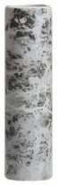
【答案】D
【知识点】常见的几何体
【分析】此题考查了几何体的概念和分类方法．根据几何体的概念和分类方法求解即可．
【详解】解：根据题意得：可以近似看成圆柱的花瓶是选项D．
故选：D
2．将下图中的立体图形分类．

柱体 ；锥体 ；球体 ．
【答案】①②⑤⑦⑧；④⑥；③
【知识点】立体图形的分类
【分析】本题主要考查立体图形的分类，解题的关键掌握立体图形的特征．据此可得答案．
【详解】解：柱体：①②⑤⑦⑧；锥体：④⑥；球体：③．
故答案为：①②⑤⑦⑧；④⑥；③．
3．综合与实践
新年晚会是我们最欢乐的时候，会场上，悬挂着五彩缤纷的小装饰，其中有各种各样的立体图形．下面是常见的一些多面体：
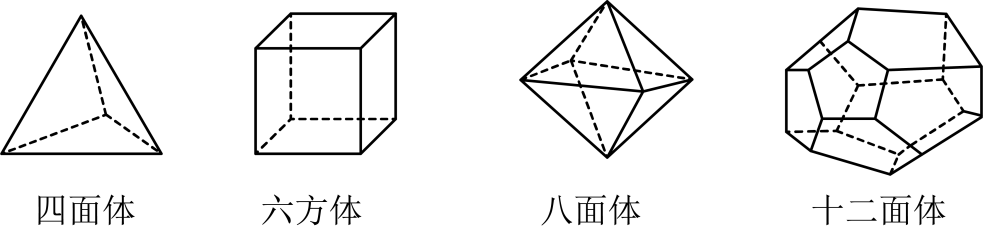
操作探究：
（1）通过数上面图形中每个多面体的顶点数 、面数
、面数 和棱数
和棱数 ，填写下表中空缺的部分：
，填写下表中空缺的部分：
多面体 | 顶点数（V） | 面数（F） | 棱数（E） |
四面体 | 4 | 4 | |
六面体 | 8 | 6 | |
八面体 | 8 | 12 | |
十二面体 | 12 | 30 |
通过填表发现：顶点数、面数和棱数之间的数量关系用式子表示为______，这就是伟大的数学家欧拉（ ，1707-1783）证明的这一个关系式．我们把它称为欧拉公式；
，1707-1783）证明的这一个关系式．我们把它称为欧拉公式；
探究应用：
（2）已知一个棱柱只有七个面，则这个棱柱是______棱柱；
（3）已知一个多面体有16个顶点，并且过每个顶点都有3条棱，求这个多面体的面数．
【答案】（1）填表见解析， ；（2）五；（3）10
；（2）五；（3）10
【知识点】常见的几何体、几何体中的点、棱、面
【分析】本题考查了多面体与棱柱的认识，点线面体的相关概念，掌握图形中各量之间的关系是解题的关键．
（1）通过观察，发现棱数 顶点数
顶点数 面数
面数 ；
；
（2）根据棱柱的定义进行解答即可；
（3）由（1）得出的规律进行解答即可．
【详解】解：（1）填表如下：
多面体 | 顶点数 | 面数 | 棱数 |
四面体 | 4 | 4 | 6 |
六面体 | 8 | 6 | 12 |
八面体 | 6 | 8 | 12 |
十二面体 | 20 | 12 | 30 |
顶点数、面数和棱数之间的数量关系是，
故答案为：；
（2） 一个棱柱只有七个面，必有2个底面，
一个棱柱只有七个面，必有2个底面，
 有
有
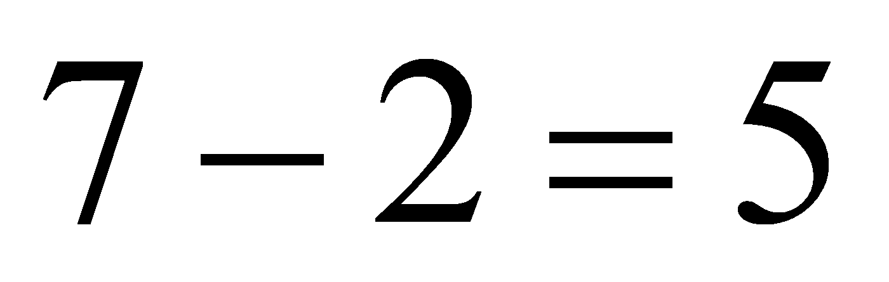
个侧面，这个棱柱是五棱柱，
故答案为：五；
（3）由题意得：棱的总条数为
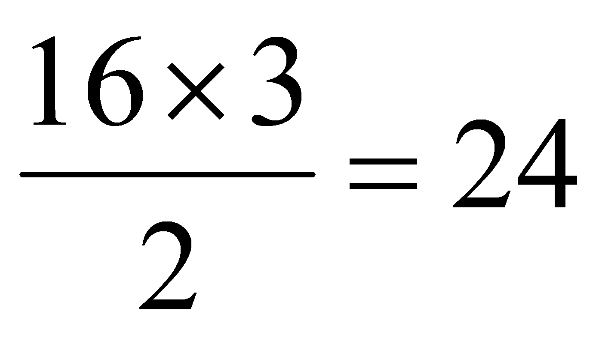
（条），由可得
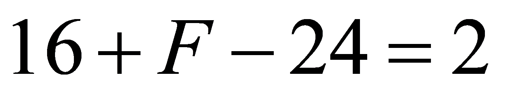
，解得： ，
，
故该多面体的面数为10．
知识点02 点、线、面、体的关系
①体与体相交成面，面与面相交成线，线与线相交成点．
②点动成线，线动成面，面动成体．
③点、线、面、体组成几何图形，点、线、面、体的运动组成了多姿多彩的图形世界．
【即学即练】
1．如图所示的立体图形，是由下列选项中的图形旋转形成，这个图形是（ ）

A．
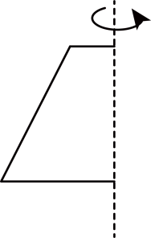
B． C．
C． D．
D．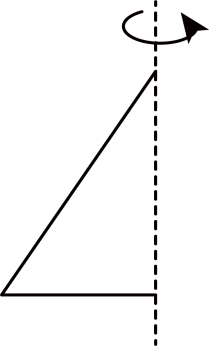
【答案】B
【知识点】平面图形旋转后所得的立体图形
【分析】本题考查点、线、面、体，根据“面动成体”的特征进行判断即可．
【详解】解：A、旋转形成一个圆台，故A不符合；
B、旋转形成一个球体，故B符合；
C、旋转形成一个圆柱体，故C不符合；
D、旋转形成一个圆锥体，故D不符合．
故选：B．
2．画卷即为卷轴形的画，如图是一幅画卷展开的过程，这个过程体现的数学原理是 ．

【答案】线动成面
【知识点】点、线、面、体四者之间的关系
【分析】本题考查了点、线、面、体的关系，熟练掌握点动成线、线动成面、面动成体是解答本题的关键．根据线动成面解答即可．
【详解】解：这个过程体现的数学原理是线动成面．
故答案为：线动成面．
3．如图，将平面图形甲、乙分别绕轴 旋转一周，可以得到立体图形
旋转一周，可以得到立体图形 ，图形甲是直角边分别为
，图形甲是直角边分别为 的直角三角形，图形乙是长为
的直角三角形，图形乙是长为 、宽为
、宽为 的长方形．
的长方形．

(1)立体图形 的名称是______；（答案直接填写在答题卡的横线上）
的名称是______；（答案直接填写在答题卡的横线上）
(2)请问立体图形比立体图形 的体积大多少？（用含和
的体积大多少？（用含和 的式子表示，
的式子表示，
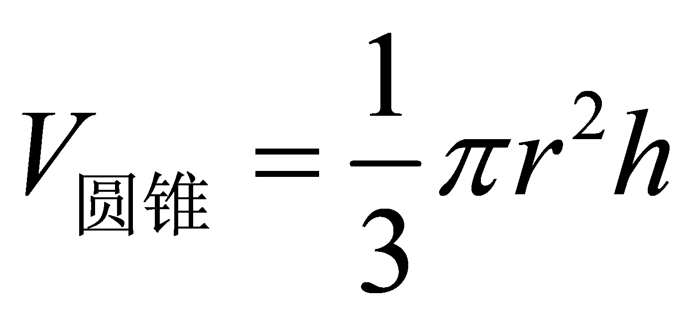
， ）
）【答案】(1)圆柱；
(2)
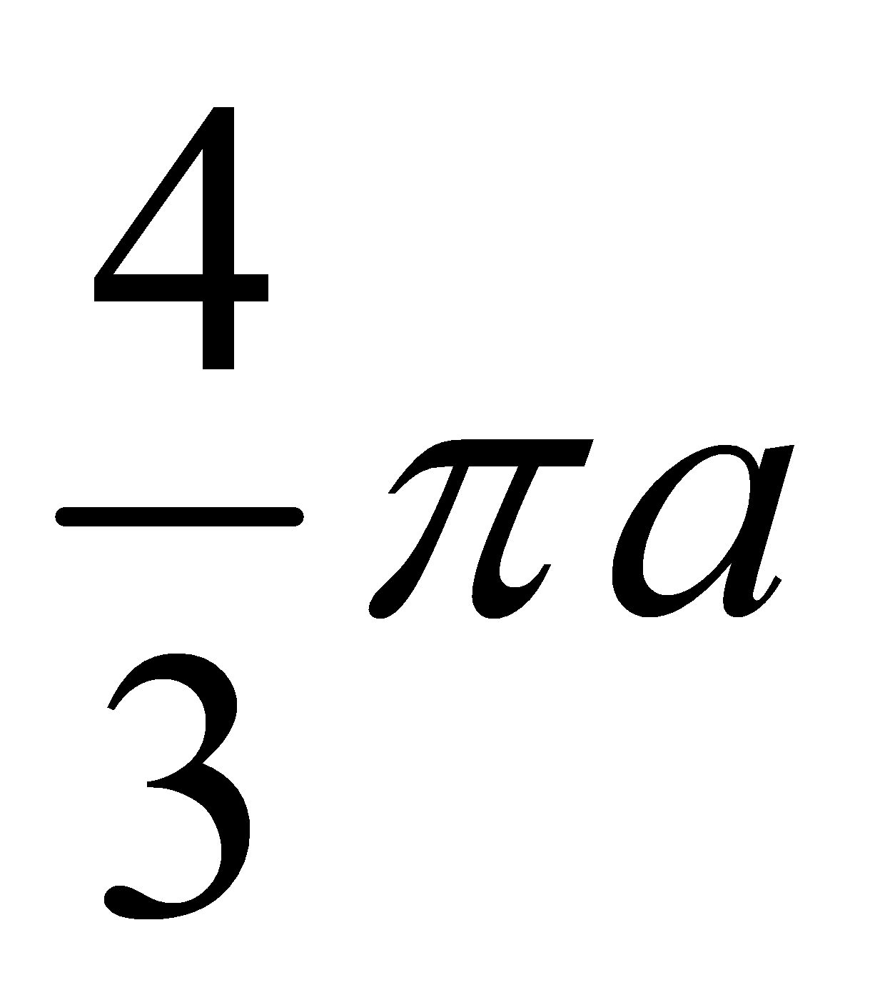
．【知识点】平面图形旋转后所得的立体图形
【分析】本题考查了面动成体，圆锥的体积、圆柱的体积等知识点，掌握知识点的应用解题的关键．
（ ）根据面动成体即可解答；
）根据面动成体即可解答；
（）设图形的体积分别为 、
、
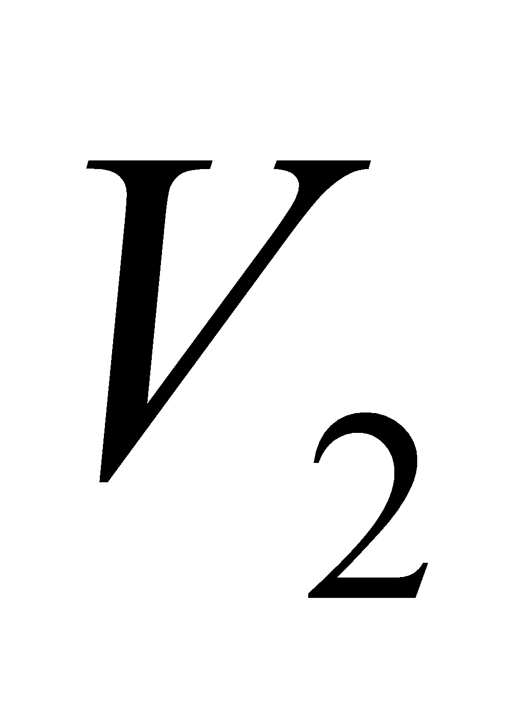
，然后分别求得图形的体积，然后作差即可解答．【详解】（1）解：以长方形的边所在直线为旋转轴得到的立体图形为圆柱，
故答案为：圆柱；
（2）解：设图形的体积分别为、，
则
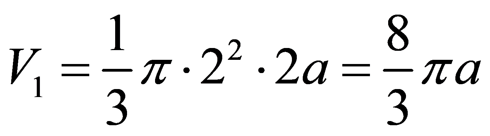
， ，
，
∴ ，
，
即立体图形比立体图形的体积大．

题型01 常见的几何体
【典例1】端午节吃粽子是我国传统节日里的一大亮点．2025年端午节前夜，小红包了一个粽子后发现它每个面均是等边三角形，如图所示，这个粽子可以近似看作（ ）
A．长方体 B．四棱锥 C．三棱柱 D．三棱锥
【答案】D
【知识点】常见的几何体
【分析】本题考查了几何体，熟练掌握各基本几何体的特征是解题的关键．
根据三棱锥的形态特征进行判断即可．
【详解】解：小红包了一个粽子后发现它每个面均是等边三角形，这个粽子可以近似看作三棱锥，
故选：D．
【变式1】下列几何体中，是三棱柱的是（ ）
A．
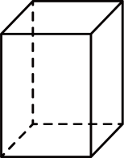
B． C．
C．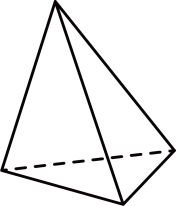
D．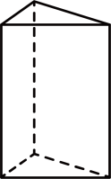
【答案】D
【知识点】常见的几何体
【分析】本题考查常见几何体的识别，底面为三角形的柱体叫作三棱柱，由此直接判断即可得出答案．
【详解】解：A．选项中的图形为长方体，不合题意；
B．选项中的图形为圆柱，不合题意；
C．选项中的图形为三棱锥，不合题意；
D．选项中的图形为三棱柱，符合题意；
故选D．
【变式2】下列几何体中，是圆柱的为（ ）
A． B．
B． C．
C．
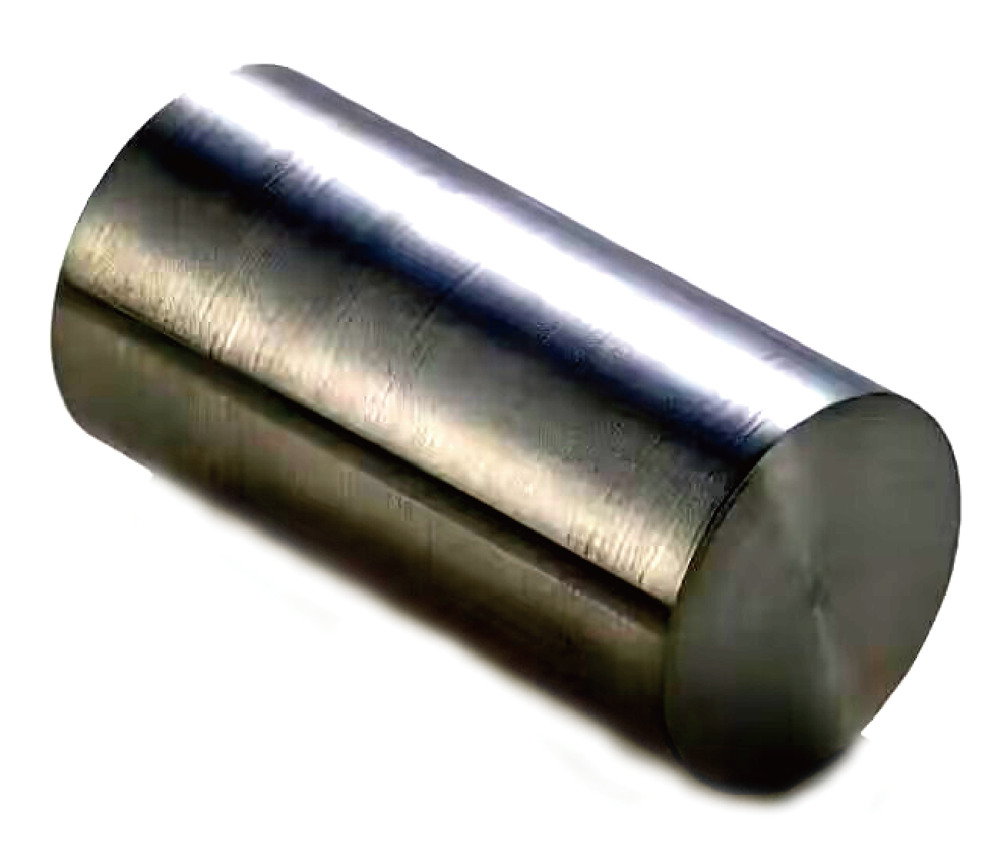
D．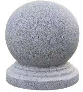
【答案】C
【知识点】常见的几何体
【分析】本题考查了几何体的认识，能认识常见的几何体是解题的关键．
【详解】解：由题意得
是圆柱体，
故选：C．
【变式3】以下图片展示了生活中的常见物品，这些物品的形状最接近圆柱体的是（ ）
A． B．
B． C．
C． D．
D．
【答案】A
【知识点】常见的几何体
【分析】本题考查了生活中常见的几何体，掌握圆柱体的定义即可．
【详解】解：Ａ：形状接近圆柱体，符合题意；
Ｂ：形状为球体，不符合题意；
Ｃ：形状为正方体，不符合题意；
Ｄ：形状接近圆锥，不符合题意；
故选：A ．
题型02 立体图形的分类
【典例1】将如图几何体分类，柱体有 ，锥体有 ，球体有 ．（填序号）

【答案】 ①②③ ⑤ ④
【知识点】立体图形的分类
【分析】本题考查了认识立体图形，熟练掌握各定义是解题关键．解这类题首先要明确柱体、锥体、球体的概念，然后根据图示进行解答即可．
【详解】解：柱体包括圆柱和棱柱，所以柱体有①②③；
锥体包括圆锥和棱锥，所以锥体有⑤；
球体属于单独的一类，是有且只有一个连续曲面的立体图形，所以球体有④；
故答案为：①②③，⑤，④．
【变式1】将下图中的立体图形分类．
柱体 ；锥体 ；球体 ．
【答案】 ①②⑤⑦⑧ ④⑥/⑥④ ③
【知识点】立体图形的分类
【分析】本题主要考查立体图形的分类，解题的关键掌握立体图形的特征．据此可得答案．
【详解】解：柱体：①②⑤⑦⑧；锥体：④⑥；球体：③．
故答案为：①②⑤⑦⑧；④⑥；③．
【变式2】如图是8个立体图形．其中，是柱体的有 ，是锥体的有 ，有曲面的有 ．（填序号）

【答案】 ①②⑤⑦⑧ ④⑥ ③④⑧
【知识点】立体图形的分类
【分析】本题主要考查了认识立体图形，正确区分它们的定义和组成是解题关键．分别根据柱体、锥体、曲面的定义进行求解即可．
【详解】解：柱体有①②⑤⑦⑧，锥体有④⑥，有曲面的有③④⑧，
故答案为：①②⑤⑦⑧；④⑥；③④⑧．
【变式3】将下图的立体图形分类，柱体有 ，锥体有 ，球有 ．（填序号）

【答案】 ①②③ ⑤⑥/⑥⑤ ④
【知识点】立体图形的分类
【分析】本题主要了立体图形的分类，理解立体图形的分类是解答关键．
根据柱体、锥体、球体进行分类求解．
【详解】解：根据图形可知
柱体分为圆柱和棱柱，所以柱体有①②③；锥体包括棱锥与圆锥，所以锥体有球属于单独的一类，球有④．
故答案为：①②③；①②③；④．
题型03 几何体中的点、棱、面
【典例1】银川承天寺塔（如图），始建于西夏天佑垂圣元年（公元1050年），是宁夏现存古塔中最高的一座砖塔．它是一座八角十一层楼阁式砖塔，它可以近似地看作由十一个八棱柱构成．请问：一个八棱柱一共有 角 条棱， 有 面， 有 个顶点．
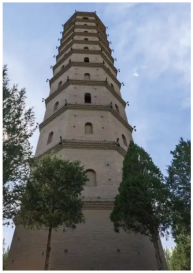
【答案】 
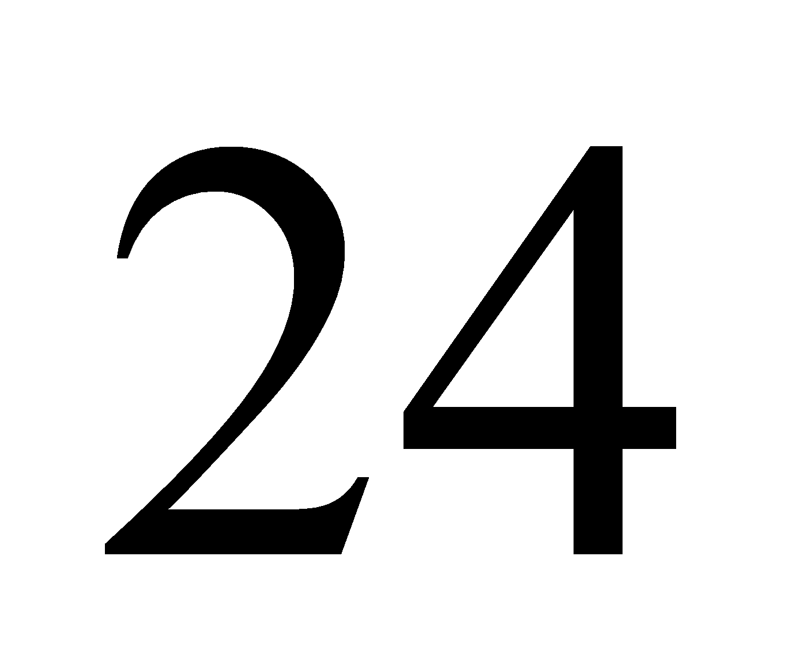

【知识点】几何体中的点、棱、面
【分析】本题考查立体几何的知识，解题的关键是掌握八棱柱的立体图形，根据图形，进行解答，即可．
【详解】解：八棱柱是一个有 个侧面的棱柱，每个侧面都是矩形，有两个底面，每个底面都是都是一个八边形，每个底面有个顶点；每个底面有条棱，每个底面的顶点都于另一个底面对应的顶点相连；
个侧面的棱柱，每个侧面都是矩形，有两个底面，每个底面都是都是一个八边形，每个底面有个顶点；每个底面有条棱，每个底面的顶点都于另一个底面对应的顶点相连；
∴八棱柱有个角；有 条棱；有个面；有
条棱；有个面；有
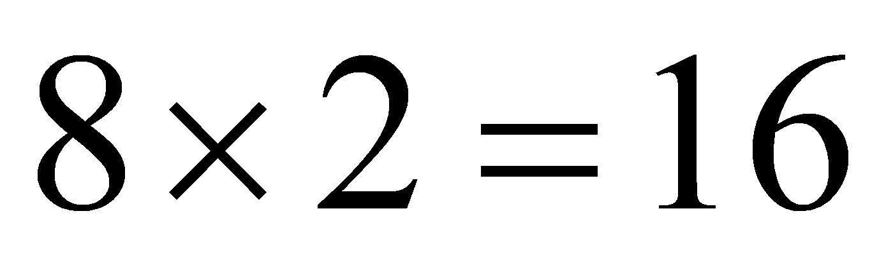
个顶点；故答案为：；；；．

【变式1】如图四个几何体分别是三棱柱，四棱柱，五棱柱和六棱柱，三棱柱有 个面，
个面， 条棱，
条棱， 个顶点，观察图形，填写下面的空．
个顶点，观察图形，填写下面的空．
（1）四棱柱有 个面， 条棱， 个顶点；
（2）六棱柱有 个面， 条棱， 个顶点；
（3）由此猜想 棱柱有 个面， 条棱， 个顶点．
棱柱有 个面， 条棱， 个顶点．

【答案】 

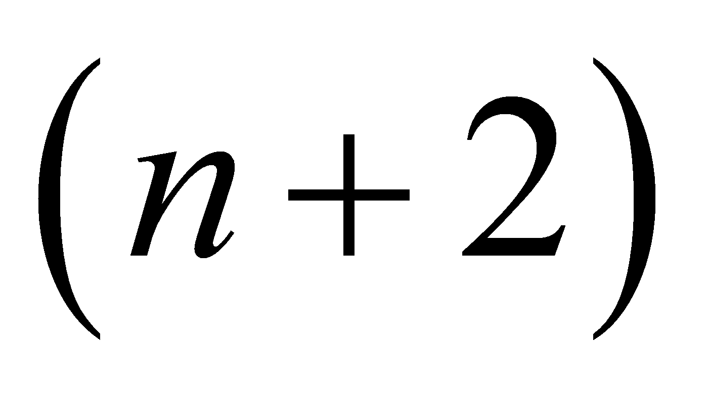
/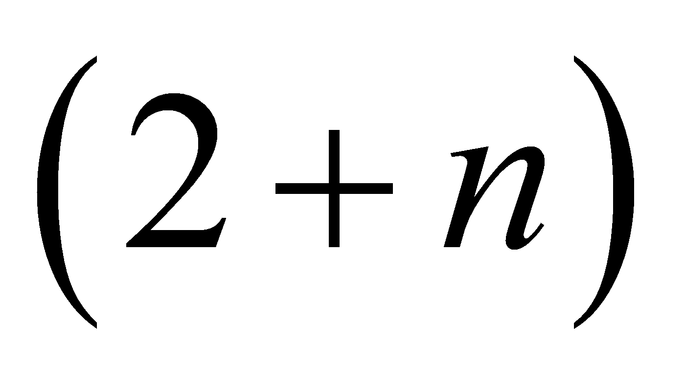


【知识点】几何体中的点、棱、面
【详解】此题考查了认识立体图形，熟记常见棱柱的特征是解题的关键；
（1）结合已知四棱柱特征，即可求解；
（2）结合六棱柱的特征，即可求解；
（3）可知棱柱一定有
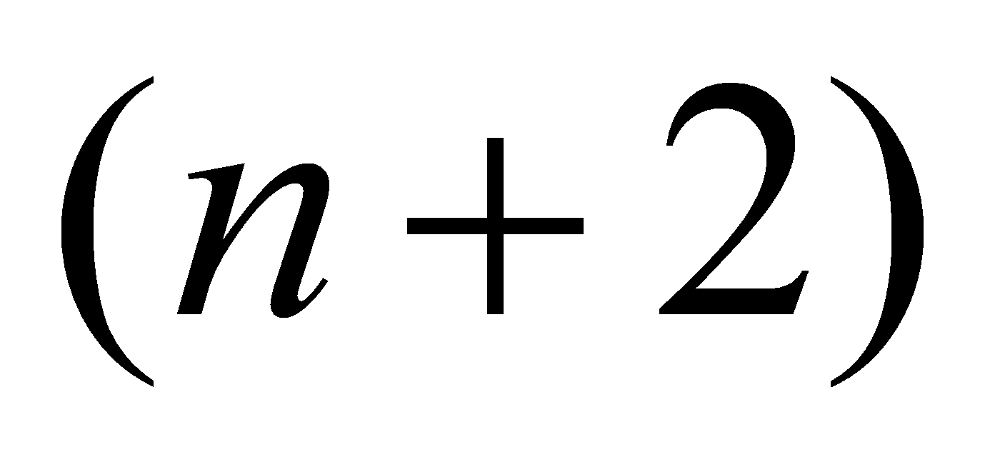
个面，条棱和个顶点；【解答】解：（1）四棱柱有个面，条棱，个顶点；
（2）六棱柱有个面，条棱，个顶点；
（3）由此猜想棱柱有个面，条棱，个顶点．
故答案为：（1），，；（2），，；（3），，．
【变式2】已知一个直棱柱，它有21条棱，其中一条侧棱长为 ，底面各边长都为
，底面各边长都为 ．
．
(1)这个直棱柱是几棱柱？
(2)它有多少个面？多少个顶点？
(3)求这个棱柱的所有侧面的面积之和．
【答案】(1)七棱柱
(2)有9个面，14个顶点
(3)
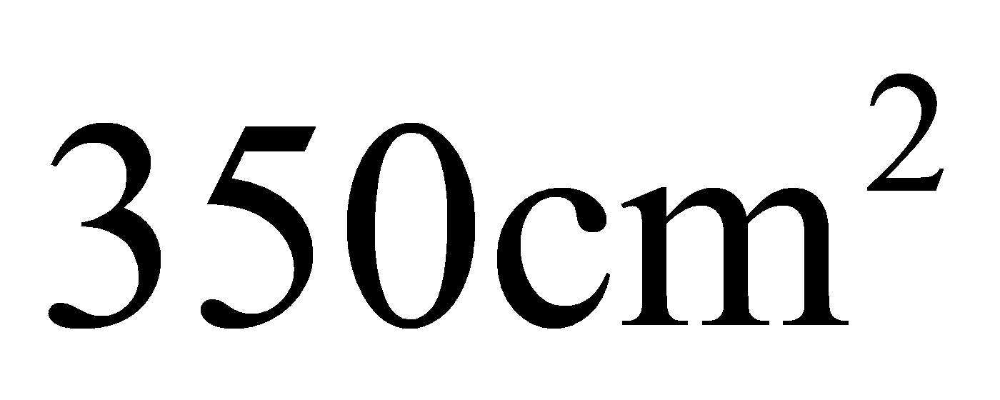
【知识点】几何体中的点、棱、面
【分析】本题考查了认识立体图形，解题的关键是掌握棱柱有个顶点，有 个面，有条棱．
个面，有条棱．
（1）由棱柱有 条棱求解可得；
（2）由棱柱有个顶点，有个面求解可得；
（3）将侧面长方形的底面周长乘以长方形的宽可得答案．
【详解】（1）解：因为
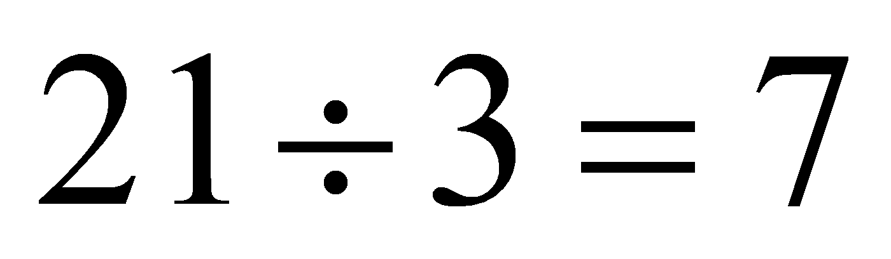
，所以这个直棱柱是七棱柱．（2）解：因为这个直棱柱是七棱柱，所以它有9个面，14个顶点．
（3）解：所有侧面的面积之和为
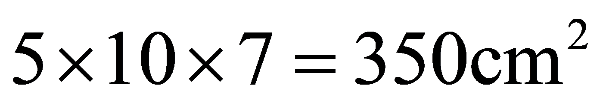
．答：这个棱柱的所有侧面的面积之和是．
【变式3】欧拉为世界著名的数学家、自然科学家，他在数学、物理、建筑、航海等领域都做出了杰出的贡献，他对多面体做过研究，发现多面体的顶点数 、棱数
、棱数 、面数
、面数 之间存在一定的数量关系，给出了著名的欧拉公式．
之间存在一定的数量关系，给出了著名的欧拉公式．
(1)观察下列多面体，并把下表补充完整：
名称 | 三棱锥 | 三棱柱 | 五棱柱 | 正八面体 |
图形 |
|
| 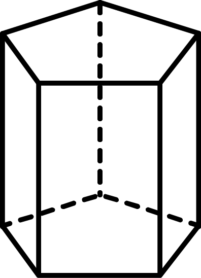 |
|
顶点数 | 4 | 6 | ||
棱数 | 6 | |||
面数 | 4 |


(2)分析表中的数据，请写出、、之间的等量关系：___________；
(3)某个饰品的外形是简单多面体，它的外表是由三角形和五边形两种多边形拼接而成的，且有36个顶点，每个顶点处都有3条棱，请问该多面体表面三角形与五边形的个数之和是多少？
【答案】(1)见解析
(2)
(3)该多面体表面三角形与五边形的个数之和是20．
【知识点】几何体中的点、棱、面
【分析】本题考查了探索规律，几何体中的点、棱、面，正确掌握相关性质内容是解题的关键．
（1）观察图形，直接写出答案即可；
（2）分析表格中的数据，发现；
（3）根据有36个顶点，每个顶点处都有3条棱，得到总棱数，根据即可求解．
【详解】（1）解：依题意，
名称 | 三棱锥 | 三棱柱 | 五棱柱 | 正八面体 |
图形 |
|
|
| |
顶点数 | 4 | 6 | 10 | 6 |
棱数 | 6 | 9 | 15 | 12 |
面数 | 4 | 5 | 7 | 8 |
（2）解：分析表中的数据，能发现、、之间的关系为：，
故答案为：；
（3）解：依题意，设该多面体表面三角形的个数为 个，五边形的个数为
个，五边形的个数为 个，
个，
 有36个顶点，每个顶点处都有3条棱，
有36个顶点，每个顶点处都有3条棱，
 共有
共有
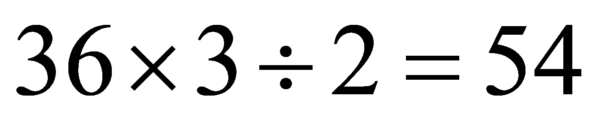
（条 ，
，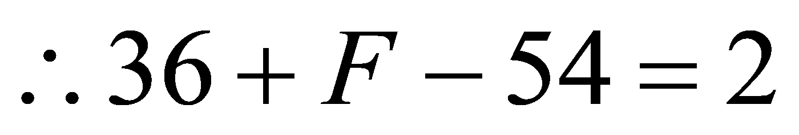
，解得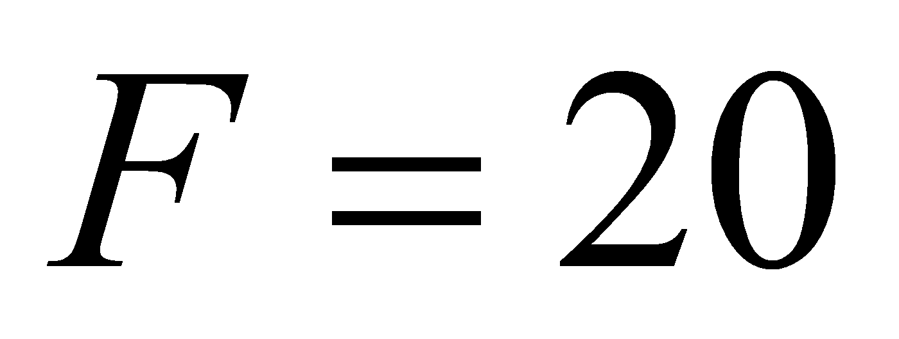
．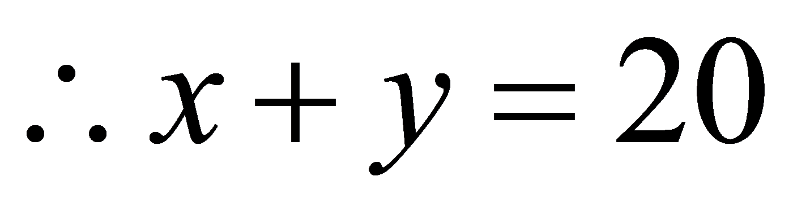
．∴该多面体表面三角形与五边形的个数之和是20．
题型04 动态认识点、线、面、体
【典例1】下面现象中，能说明“线动成面”的是（ ）
A．天空划过一道流星
B．时钟的钟摆摆动留下的痕迹
C．抛出一块小石子，石子在空中飞行的路线
D．一枚硬币在桌面上旋转的轨迹
【答案】B
【知识点】点、线、面、体四者之间的关系
【分析】本题考查了点、线、面、体，熟练掌握点、线、面、体四者之间的关系是解题的关键．根据点、线、面、体四者之间的关系，对选项逐个分析判断即可．
【详解】解：A、天空划过一道流星，能说明“点动成线”，不符合题意；
B、时钟的钟摆摆动留下的痕迹，能说明“线动成面”，符合题意；
C、抛出一块小石子，石子在空中飞行的路线，能说明“点动成线”，不符合题意；
D、一枚硬币在桌面上旋转的轨迹，能说明“面动成体”，不符合题意；
故选：B．
【变式1】朱自清的《春》一文里，在描写春雨时有“像牛毛，像细丝，密密地斜织着”的语句，这里用数学的眼光来看其实是把雨滴看成了点，把雨看成线，说明（ ）
A．点动成线 B．线动成面 C．面动成体 D．以上三个均有
【答案】A
【知识点】点、线、面、体四者之间的关系
【分析】此题考查了点、线、面、体，解题关键在于掌握从运动的观点来看：点动成线，线动成面，面动成体．根据点动成线直接判断即可得到答案．
【详解】解：由题意可得，这里用数学的眼光来看其实是把雨滴看成了点，把雨看成线，说明点动成线，
故选：A
【变式2】在朱自清的《春》中描写春雨“像牛毛、像花针、像细丝，密密麻麻地斜织着”的语句，这里把雨看成了线，这种生活现象可以反映的数学原理是（ ）
A．线动成面 B．点动成线
C．面动成体 D．点动成线、线动成面、面动成体
【答案】B
【知识点】点、线、面、体四者之间的关系
【分析】本题考查了点、线、面、体的关系，熟练掌握点动成线，线动成面，面动成体是解题的关键．根据点动成线，线动成面，面动成体，即可解答．
【详解】解：在朱自清的《春》中描写春雨“像牛毛、像花针、像细丝，密密麻麻地斜织着”的语句，这里把雨看成了线，这种生活现象可以反映的数学原理是：点动成线，
故选：B．
【变式3】在中国传统文化中，折叠灯笼是一种既美观又富有创意的手工艺品．当它折叠起来时看起来是平面的，当被提起来后又变成了如图所示的圆柱形的灯笼，这种现象说明的数学道理是（ ）

A．点动成线 B．线动成面
C．面动成体 D．面与面相交的地方是线
【答案】C
【知识点】点、线、面、体四者之间的关系
【分析】本题考查了点、线、面、体的相关知识．熟练掌握由平面图形变成立体图形的过程是面动成体是解题的关键．
根据由平面图形变成立体图形的过程是面动成体判断作答即可．
【详解】解：由题意知，这种现象说明的数学道理是面动成体，
故选：C．
题型05 平面图形旋转所得立体图形
【典例1】下面图形中，以直线为轴旋转，可以得到圆锥体的是（ ）
A．
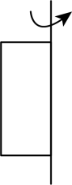
B． C．
C． D．
D．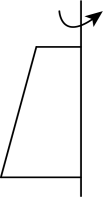
【答案】C
【知识点】平面图形旋转后所得的立体图形
【分析】本题考查了圆锥的认识及特点，灵活掌握圆锥的特点，是解答此题的关键．
根据一个直角三角形以一条直角边为轴，旋转一周，得到的图形是圆锥，据此解答即可．
【详解】解：一个直角三角形以一条直角边为轴，旋转一周，得到的图形是圆锥．
故选： ．
．
【变式1】陶瓷器具是我国古代劳动人民的重要发明之一，是中国人民勤劳与智慧的结晶．如图所示，将给定的图形绕虚线旋转一周得到的几何体与下列陶瓷花瓶最为类似的是（ ）

A． B．
B．
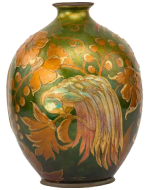
C． D．
D．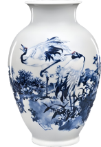
【答案】D
【知识点】平面图形旋转后所得的立体图形
【分析】本题主要考查了面动成体，解题关键在于能够通过几何直观得出选项．通过丰富的空间想象力类比选项中各花瓶的外表即可得出答案．
【详解】解：将所给图形绕直线旋转一周后的几何体与D选项的花瓶外表最为相似，
故选：D．
【变式2】将如图所示的平面图形绕直线 旋转一周，得到的立体图形是（ ）
旋转一周，得到的立体图形是（ ）
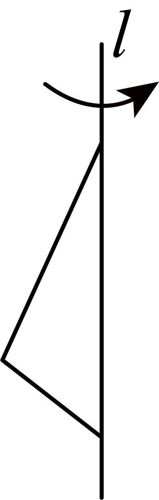
A． B．
B． C．
C．
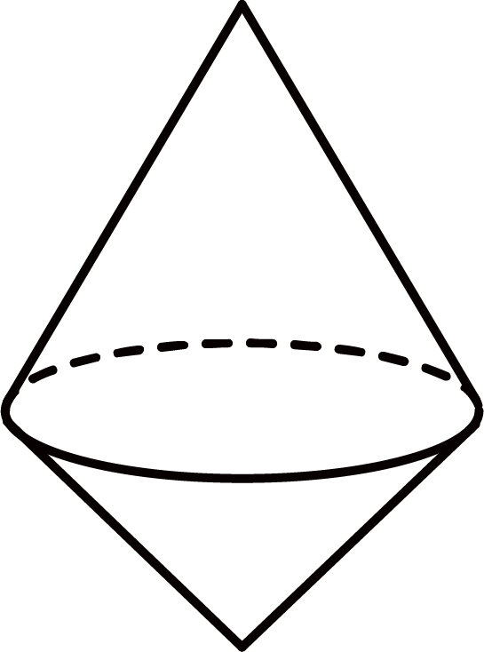
D．
【答案】C
【知识点】平面图形旋转后所得的立体图形
【分析】本题考查了平面图形旋转后所得的立体图形，根据如图所示的平面图形绕直线旋转一周得出两个圆锥的组合体，即可作答．
【详解】
解：依题意，绕直线旋转一周，得到的立体图形是：
，
故选：C．
【变式3】如图，第一行的图形绕虚线转一周，能形成第二行的哪个几何体？ 用线连起来．
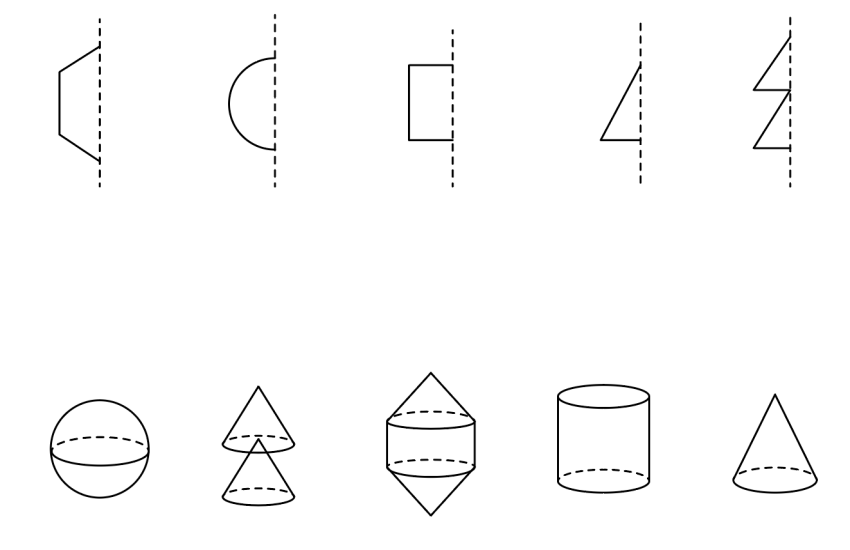
【答案】见解析
【知识点】平面图形旋转后所得的立体图形
【分析】本题考查了点、线、面、体，根据面动成体：梯形绕底边旋转得中间圆柱、上下圆锥，半圆绕直径旋转得球，矩形绕边旋转得圆柱，直角三角形绕直角边旋转得圆锥，可得答案．
【详解】解：第一行的图形绕虚线转一周，能形成第二行的某个几何体，用线连起来为：
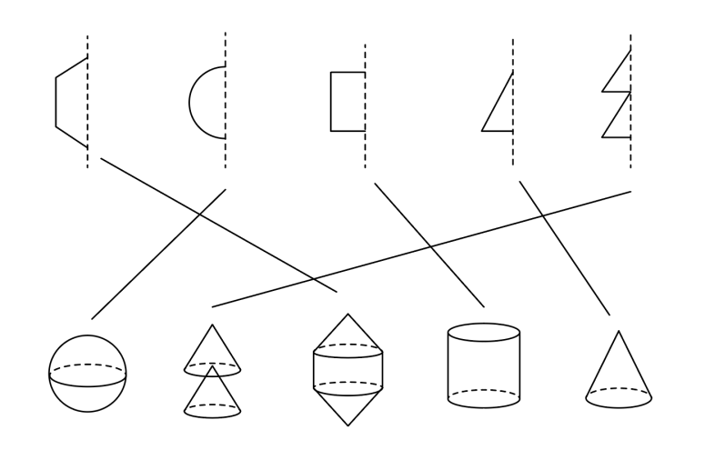
．题型06 求平面图形旋转所得立体图形体积
【典例1】如图，将长方形绕其长边所在直线旋转一周，得到一个立体图形．

(1)这个立体图形是______．
(2)求这个立体图形的侧面积．（结果保留 ）
）
【答案】(1)圆柱
(2)这个图形的侧面积是 ．
．
【知识点】平面图形旋转后所得的立体图形
【分析】本题主要考查了面动成体，解答此题的关键是找出旋转所得到的图形与原图形之间的数据关系．
（1）根据面动成体可知将正方形围绕它的一条边为轴旋转一周，得到的是圆柱；
（2）根据圆柱的高和底面周长，进行计算即可．
【详解】（1）解：将长方形围绕它的一条边为轴旋转一周，得到的是圆柱，
故答案为：圆柱；
（2）解：这个立体图形的侧面积为
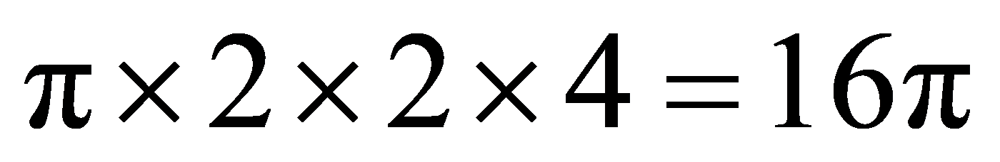
；答：这个图形的侧面积是．
【变式1】如图，某酒店大堂的旋转门内部由四块宽2m、高3m的长方形玻璃隔板组成．
(1)每扇旋转门旋转一周，能形成的几何体是 ，这体现了 动成体；
(2)求每扇旋转门旋转一周形成的几何体的体积（结果保留π）．
【答案】(1)圆柱；面；
(2) ．
．
【知识点】点、线、面、体四者之间的关系、平面图形旋转后所得的立体图形
【分析】本题考查了点、线、面、体，准确熟练地进行计算是解题的关键．
（1）根据圆柱的特征，以及点、线、面、体的关系，即可解答；
（2）利用圆柱的体积公式进行计算，即可解答．
【详解】（1）解：每扇旋转门旋转一周，能形成的几何体是圆柱，这体现了面动成体，
故答案为：圆柱；面；
（2）解：由题意得：
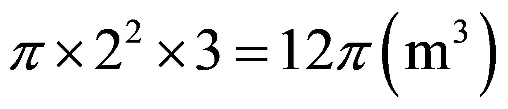
，∴每扇旋转门旋转一周形成的几何体的体积 ．
．
【变式2】小军和小红分别以直角梯形的上底和下底为轴，将梯形旋转一周，得到的两个立体图形．我们旋转的平面图形是完全一样的，所以旋转后得到的两个立体图形的体积相等．
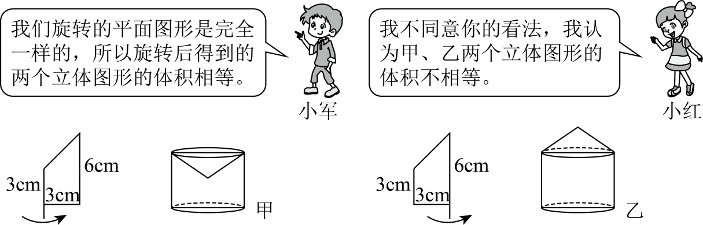
(1)小红得到的立体图形可以看成是由_______和_______构成的，这个现象用数学知识解释为_______
(2)你认为谁的说法正确？请通过计算说明理由．
【答案】(1)圆锥；圆柱；面动成体
(2)小红的说法正确，理由见解析
【知识点】平面图形旋转后所得的立体图形
【分析】本题主要考查了圆柱和圆锥的体积计算，面动成体：
（1）由题意得，小红得到的立体图形可以看成是由圆锥和圆柱构成的，这个现象用数学知识解释为面动成体；
（2）根据圆柱和圆锥的体积计算公式分别计算出甲、乙两个立体图形的体积即可得到答案．
【详解】（1）解：由题意得，小红得到的立体图形可以看成是由圆锥和圆柱构成的，这个现象用数学知识解释为面动成体，
故答案为：圆锥；圆柱；面动成体；
（2）解：小红的说法正确，理由如下：
甲的体积为 ，
，
乙的体积为
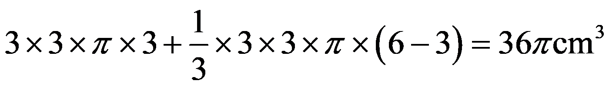
，∴甲、乙两个立体图形的体积不相等，
∴小红的说法正确．
【变式3】当同一个平面图形绕不同的轴旋转时，得到的立体图形一般不同．
(1)如图1是一张长方形纸片， 长为
长为 ，
， 长为
长为 ．若将这个长方形纸片绕它的对边中点所在直线旋转一周，求形成的几何体的表面积．（结果保留π）
．若将这个长方形纸片绕它的对边中点所在直线旋转一周，求形成的几何体的表面积．（结果保留π）
(2)已知一个直角三角形，它的各边长如图2所示．当三角形绕着图中所示的虚线旋转一周时，得到的是一个几何体，你能求出这个几何体的体积吗？（结果保留π）
【答案】(1) 或
或
(2)
【知识点】平面图形旋转后所得的立体图形
【分析】本题考查点、线、面、体以及几何体的表面积，理解“面动成体”是正确解答的前提，掌握圆柱体、圆锥体体积的计算方法是正确解答的关键．
（1）分绕 和两边中点所在直线旋转一周和绕和
和两边中点所在直线旋转一周和绕和 两边中点所在直线旋转一周两种情况解答即可；
两边中点所在直线旋转一周两种情况解答即可；
（2）根据“面动成体”得出所得到的几何体的特征，再根据圆柱体、圆锥体积的计算方法进行计算即可．
【详解】（1）解：当绕和两边中点所在直线旋转一周时，形成的几何体的表面积为：
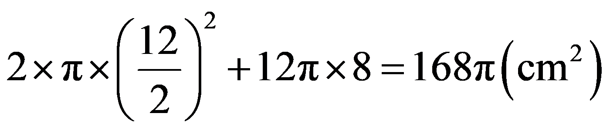
；当绕和两边中点所在直线旋转一周时，形成的几何体的表面积为：
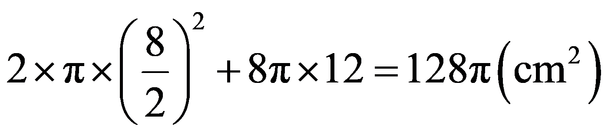
；故形成的几何体的表面积为 或
或
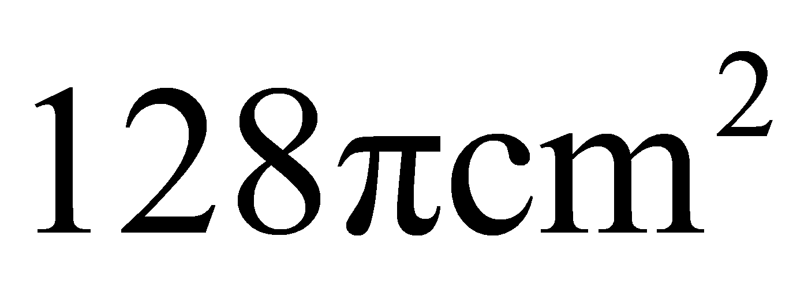
；（2）解：三角形绕着图中所示的虚线旋转一周时，得到的是一个圆柱挖去一个圆锥后剩余的几何体，其中圆柱和圆锥的底面半径均为 ，高均为
，高均为 ，
，
得到的几何体的体积 ．
．

1．如图，生活中的实物可以抽象出各种各样的几何图形，如图所示的斗笠的形状类似于（ ）

A．球 B．圆柱 C．棱锥 D．圆锥
【答案】D
【知识点】常见的几何体
【分析】此题主要考查了认识立体图形，认识常见的立体图形，如：长方体、正方体、圆柱、圆锥、球、棱柱、棱锥等．根据图形直接得到答案．
【详解】解：如图所示的斗笠的形状类似于圆锥．
故选：D．
2．如图为小文同学的几何体素描作品，下列选项中该作品中不存在的几何体为（ ）
A．棱柱 B．正方体 C．圆柱 D．球
【答案】C
【知识点】常见的几何体
【分析】本题考查的是简单几何体的识别，熟练掌握几何体的特征是解题的关键．
根据棱柱，球，圆柱的特点分析即可．
【详解】解：由题意可得：该作品中有六棱柱，球，正方体，没有圆柱，
故选：C．
3．下列四个立体图形中，是棱柱的是（ ）
A． B． C．
C． D．
D．
【答案】A
【知识点】常见的几何体
【分析】本题考查了认识几何体，能识别常见的柱体、锥体、球体是解题的关键．
【详解】解：A.是五棱柱，故符合题意；
B.是三棱锥，故不符合题意；
C.是球体，故不符合题意；
D. 是圆柱，故不符合题意；
故选：A．
4．用一根小棒粘住直角三角形的一条直角边，旋转一周，这个三角形转动后产生的图形是（ ）
A．三角形 B．圆形 C．圆锥 D．圆柱
【答案】C
【知识点】平面图形旋转后所得的立体图形
【分析】此题考查了立体图形和平面图形的理解能力，主要培养学生的观察能力和空间想象能力．根据点动成线，线动成面，面动成体及直角三角形、圆锥的特征，直角三角形绕一直角边旋转一周产生的图形是以旋转直角边为高，另一直角边为底面半径的圆锥．据此解答即可．
【详解】解：直角三角形绕它的直角边旋转一周可形成圆锥．
故选：C．
5．如图，分别以直角梯形的下底和上底所在的直线为轴，将梯形旋转一周得到A，B两个几何体，则 ，
， 两个几何体的体积之比是（ ）
两个几何体的体积之比是（ ）

A． B．
B． C．
C． D．
D．
【答案】C
【知识点】平面图形旋转后所得的立体图形
【分析】本题考查了圆柱和圆锥的体积、图形的旋转，熟练掌握图形的旋转是解题关键．几何体的体积等于圆柱的体积与圆锥的体积之和，几何体的体积等于圆柱的体积减去圆锥的体积，由此即可得．
【详解】解：几何体的体积为
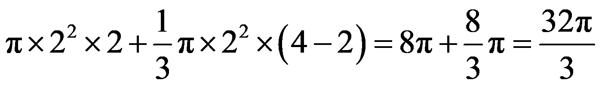
，几何体的体积
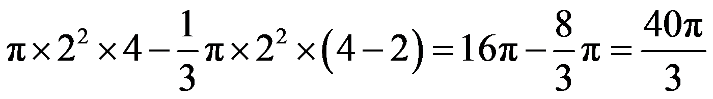
，则，两个几何体的体积之比是
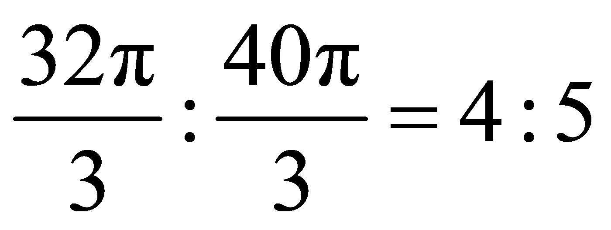
，故选：C．
6．积木是很多同学小时候玩过的一种玩具，对于锻炼手眼协调能力，培养科学思维很有帮助．如图所示是用积木拼成的小车，写出你能看出的立体图形： ．（写两种即可）

【答案】长方体、三棱柱（答案不唯一）
【知识点】常见的几何体
【分析】本题考查了立体图形，有些几何图形（如长方体、正方体、圆柱、圆锥、球等）的各部分不都在同一个平面内，这就是立体图形．根据立体图形的定义看图写出两种即可．
【详解】解：立体图形有长方体、三棱柱、圆柱体，写出两种即可，
故答案为：长方体、三棱柱（答案不唯一）．
7．向空中扔一块小石子，小石子经过的路线用数学知识解释为点动成线．中国扇文化有着深厚的文化底蕴，中国历来有“制扇王国”之称．如图，打开折扇时．随着扇骨的移动形成一个扇面，这种现象用数学知识解释为 ．
【答案】线动成面
【知识点】点、线、面、体四者之间的关系
【分析】本题考查了线、面的关系，根据题意，结合线动成面的数学原理：某一条线在运动过程中留下的运动轨迹会组成一个平面图形，这个平面图形就是一个面，即可得出答案．熟练掌握线动成面的数学原理是解本题的关键．
【详解】解：根据题意，这种现象可以用数学原理解释为：线动成面．
故答案为：线动成面．
8．将图中的几何体分类，柱体有 ，锥体有 （填序号）．

【答案】 （1）（2）（3） （5）（6）
【知识点】立体图形的分类
【分析】本题考查了几何体的分类，几何体一般分为柱体、锥体和球，首先要明确柱体，锥体的概念和定义，然后根据图示进行解答．
【详解】解：柱体分为圆柱和棱柱，所以柱体有：（1）、（2）、（3）；
锥体包括棱锥与圆锥，所以锥体有（5）、（6）．
故答案为：（1）、（2）、（3）；（5）、（6）．
9．如图，该几何体是一个直棱柱，它的名称是 ，它有 个顶点， 条棱．

【答案】 四棱柱 8 12
【知识点】几何体中的点、棱、面
【分析】本题考查了认识立体图形，根据四棱柱的特征即可得出答案．
【详解】解：该几何体是一个直棱柱，它的名称是四棱柱，它有8个顶点12条棱．
故答案为：四棱柱，8，12．
10．如图是一张长方形纸片，长方形的长为
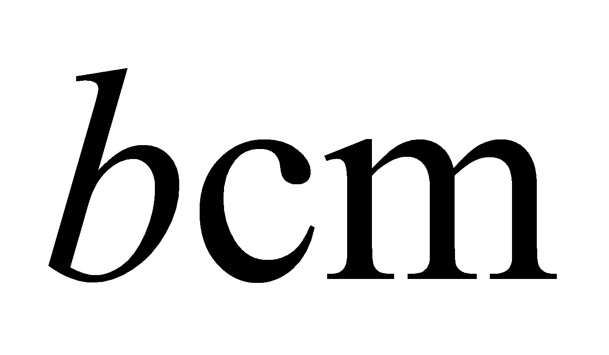
，宽为 ，若将此长方形纸片绕它的宽所在直线旋转一周，得到一个几何体，这个几何体的侧面积为
，若将此长方形纸片绕它的宽所在直线旋转一周，得到一个几何体，这个几何体的侧面积为  （结果保留
（结果保留 ）．
）．
【答案】
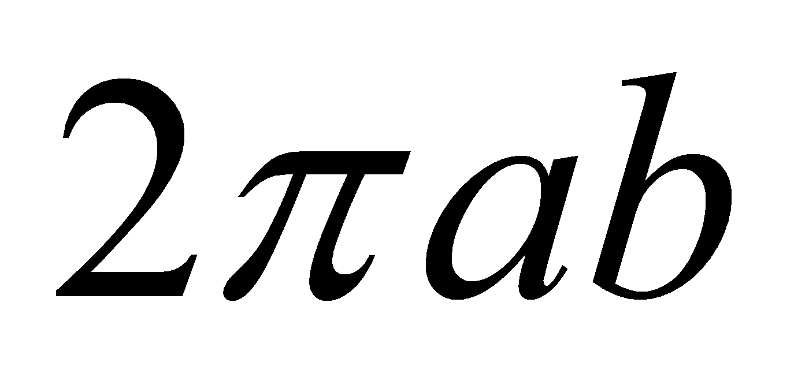
/【知识点】由展开图计算几何体的表面积、平面图形旋转后所得的立体图形
【分析】本题考查几何体的表面积，正确记忆相关几何体的特征是解题关键．
根据面动成体可知，将长方形纸片绕它的一边所在直线旋转一周，得到的几何体是圆柱，根据圆柱的侧面积公式计算即可．
【详解】解：∵长方形纸片绕它的宽所在直线旋转一周，得到的是底面半径为，高为的圆柱，
∴它的侧面积为，
故答案为：．
11．指出如图所示的立体图形中的柱体、锥体、球．
(1)如果按“柱、锥、球”来分，柱体有 ，锥体有 ，球有 ；
(2)如果按“有无曲面”来分，有曲面的有 ，无曲面的有 ．
【答案】(1)（ ），（
），（ ），（
），（ ）；（
）；（ ）（
）（ ）；（
）；（ ）；
）；
(2)（），（），（）；（），（），（）．
【知识点】立体图形的分类
【分析】（）根据立体图形的分类即可求解；
（）根据立体图形的分类即可求解；
本题考查了立体图形，熟练掌握立体图形的特点是解题的关键．
【详解】（1）按“柱、锥、球”来分，柱体有（），（），（），锥体有（）（），球有（），
故答案为：（），（），（）；（）（）；（）；
（2）按“有无曲面”来分，有曲面的有（），（），（），无曲面的有（），（），（），
故答案为：（），（），（）；（），（），（）．
12．如图，直角三角形纸片的两条直角边的长分别为a，b，将它分别绕直线（图1）和直线（图2）旋转一周．
(1)两次旋转所形成的几何体都是_____；
(2)若 ，
， ，则图2中，绕直线
，则图2中，绕直线 旋转一周后形成的几何体的底面积为多少？（结果保留）
旋转一周后形成的几何体的底面积为多少？（结果保留）
【答案】(1)圆锥
(2)
【知识点】点、线、面、体四者之间的关系、平面图形旋转后所得的立体图形
【分析】此题主要考查了点、线、面、体，图形的旋转变换，圆锥的定义及圆的面积公式，熟练掌握圆锥的定义及圆的面积公式是解答此题的关键．
（1）根据圆锥的定义可知即可得出答案；
（2）根据圆锥的底面是圆，运用圆面积公式求解即可．
【详解】（1）解：根据圆锥的定义可知：旋转所得的几何体都是圆锥．
故答案为：圆锥；
（2）绕直线旋转一周后形成的几何体的底面积．
13．已知长方形的长为 ，宽为
，宽为 ，将这个长方形分别绕它的长和宽旋转一周，可以得到两个圆柱（如图）．
，将这个长方形分别绕它的长和宽旋转一周，可以得到两个圆柱（如图）．
(1)圆柱①的底面直径是_____，高是_____；圆柱②的底面直径是_____，高是_____；
(2)试比较这两个圆柱的侧面积．
【答案】(1) ，，
，， ，b
，b
(2)这两个圆柱的侧面积相等
【知识点】几何体中的点、棱、面、平面图形旋转后所得的立体图形
【分析】本题考查圆柱的计算、几何体的表面积，掌握圆柱侧面积的计算公式是解题的关键．
（1）根据图作答即可；
（2）根据圆柱的侧面积公式分别计算圆柱①和圆柱②的侧面积并比较大小即可．
【详解】（1）解：圆柱①的底面直径是，高是；圆柱②的底面直径是，高是b．
故答案为：，，，b．
（2）解：圆柱①的侧面积是；圆柱②的侧面积是，
∴这两个圆柱的侧面积相等．
14．小军和小红分别以直角梯形的上底和下底所在的直线为轴，将梯形旋转一周，得到了两个立体图形．
小军：我们旋转的平面图形是完全一样的，所以旋转后得到的两个立体图形的体积相等．
小红：我不同意你的看法，我认为甲、乙两个立体图形的体积不相等．

(1)你同意____________的说法．
(2)甲、乙两个立体图形的体积比是多少？
【答案】(1)小红
(2)
【知识点】 组合体的体积、比的应用、平面图形旋转后所得的立体图形
【分析】本题主要考查了圆柱和圆锥的体积计算，面动成体，
（1）根据圆柱和圆锥的体积计算公式分别计算出甲、乙两个立体图形的体积即可得到答案．
（2）根据（1）直接求解即可．
【详解】（1）解：甲的体积为，
乙的体积为，
∴甲、乙两个立体图形的体积不相等，
∴同意小红的说法．
故答案为：小红
（2）解： ，
，
答：甲、乙两个立体图形的体积比是．
15．如图所示是一些常见的多面体．
(1)数一下每一个多面体具有的顶点数（V）、棱数（E）和面数（F），并且把结果记入表中：
多面体 | 顶点数（V） | 面数（F） | 棱数（E） |
正四面体 | 4 | 4 | 6 |
正方体 | 6 | ||
正八面体 | 6 | 12 | |
正十二面体 | 20 | 12 | |
正二十面体 | 12 | 20 | 30 |
(2)观察表中数据，猜想多面体的顶点数（V）和面数（F）的和与棱数（E）之间的关系；
(3)若已知一个多面体的顶点数 ，棱数
，棱数 ，请你用（2）中的结果求这个多面体的面数．
，请你用（2）中的结果求这个多面体的面数．
【答案】(1)见解析
(2)
(3)100
【知识点】有理数加减混合运算的应用、用代数式表示数、图形的规律、几何体中的点、棱、面
【分析】本题是对欧拉公式的考查，观察图形准确数出各图形的顶点数、面数、棱数是解题的关键．
（1）根据图形数出顶点数，面数，棱数，填入表格即可；
（2）根据表格数据，由顶点数与面数的和减去棱数等于2进行解答；
（3）中把顶点与棱数代入上步所得公式进行计算即可求解．
【详解】（1）解：所填数据如表所示：
正方体 | 8 | 12 | |
正八面体 | 8 | ||
正十二面体 | 30 |
（2）解：∵ ，，
，， ，
， ，
，
∴
（3）解：由，得，
所以，
所以这个多面体的面数为100．